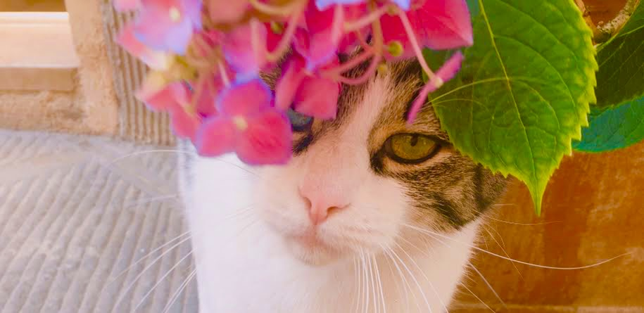

Stephanie Vegliante
About Me
Hi, I'm Stephanie! Originally from the San Francisco Bay Area, I've been living on the East Coast for the past ten years, and have recently finished up four years at Fordham University with a Major in Computer Science and Minor in Spanish.
Work Experience
Student Tutor
Fordham University Computer Science Department
September 2022 - May 2024
- Instructed students on various Computer Science topics in which they needed extra help
- Taught students problem solving and debugging skills
- Mentored underclassmen as they progressed through Computer Science classes and assignments
Programming Languages Studied
- C++ (4 years)
- Java (2 years)
- Python (2 years)
- HTML (1 year)
- CSS (1 year)
- Javascript (6 months)
- SQL (6 months)
Additional Experience
Singer
Fordham Women's Choir
September 2022 - May 2024
- Attended weekly choir practices to rehearse music for upcoming performances
- Practiced and collaborated with choir members to perfect our voices together
- Performed in three concerts per semester in front of multiple audiences
Copy Editor
The Fordham Ram
August 2021 - October 2022
- Collaborated with a team of copy editors to prepare articles for publication
- Inspected articles for grammar and spelling errors and edited them appropriately
- Maintained comprehensive and confident knowledge of AP style rules
Hobbies
- Piano I have been playing classical piano since the age of five. My favorite composers are Debussy and Bach.
- Reading I love escaping into different worlds, and at any given time I usually have my head in a book. So far this year I've read around 20 books, my favorite being "Crooked Kingdom" by Leigh Bardugo.
- Art Lately I've been passionate about color pencil drawing but I also have skills in crochet, embroidery, and photograpy.
- Language Learning I can speak Spanish at an intermediate-advanced level, and am also learning Italian.
- Cooking From a young age I've loved learning how to cook many different types of cusine in order to try new dishes in my own home.